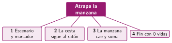

Dividir un problema en partes
🤔 Pienso5 min
Qué hago aquí: Piensa un momento y contesta con lo que ya sabes. No pasa nada si no lo sabes: es para empezar.
Vais a organizar una fiesta de clase. Escribe cuatro tareas en las que dividirías el trabajo.
📖 Leo y aprendo10 min
Qué hago aquí: Lee despacio, mira los dibujos y los ejemplos, y quédate con la idea clave del final.
Un juego entero parece difícil. Pero está hecho de problemas pequeños. Dividirlo es la descomposición.

Programa la parte 1 y pruébala. Cuando funcione, pasa a la 2. Así, si algo falla, sabes dónde buscar.
✏️ Hago30 min
Qué hago aquí: Haz las actividades en orden. Empieza siempre por las básicas.
Elige un juego: laberinto, carrera de coches o esquiva los meteoritos. Divídelo en cuatro partes.
✏️ Puedes responder escribiendo, con un dibujo o un esquema, o contándolo en voz alta.
Escribe qué objetos y qué variables necesita tu juego.
Programa y prueba la parte 1. Marca cuando funcione:
¿Qué parte de tu juego podría ser un bloque propio? ¿Qué parámetros tendría?
🚀 Amplío (si quieres saber más)
Qué hago aquí: ¿Has terminado? Lee la curiosidad o elige el reto. Es voluntario.
Programa la parte 2 de tu juego y pide a un compañero que lo pruebe. Anota un fallo que encuentre.
✅ Compruebo5 min
Qué hago aquí: Contesta sin mirar la ficha y marca cómo lo llevas.